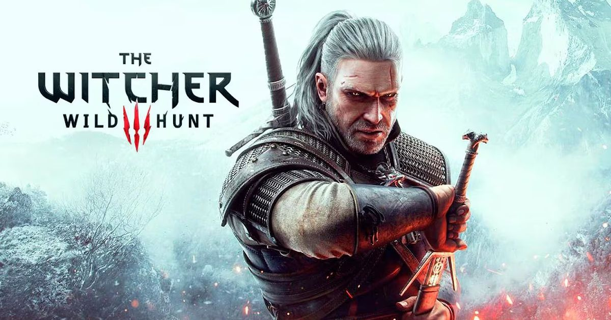
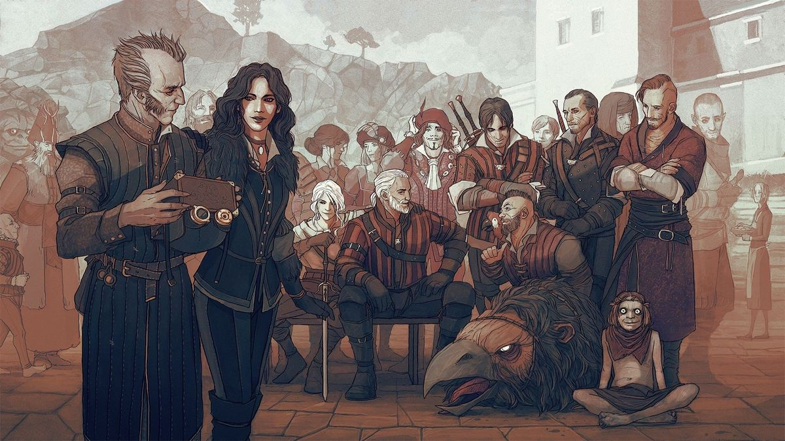

Um RPG lendário de fantasia e sombrio.

The Witcher 3 - Wild Hunter é um jogo de RPG de ação e de 2015 desenvolvido e publicado pela CD Projekt. É a sequência do jogo de 2011 The Wicther 2 - Assassins of Kings e o terceiro jogo da série de videogames The Witcher, jogado em um mundo aberto com perspectiva em terceira pessoa.
Os jogos seguem a série de romances de fantasia The Witcher, do autor polonês Andrzej Sapkowski. O jogo se passa em um mundo de fantasia fictício baseado no folclore eslavo. Os jogadores controlam Geralt de Rívia, um caçador de monstros contratado conhecido como Bruxo, e procuram por sua filha adotiva, Ciri, que está fugindo da Caçada Selvagem.
Os jogadores enfrentam os muitos perigos do jogo com armas e magia, interagem com personagens não jogáveis e completam missões para ganhar pontos de experiência e ouro, que são usados para aumentar as habilidades de Geralt e comprar equipamentos. A história do jogo tem três finais possíveis, determinados pelas escolhas do jogador em pontos-chave da narrativa. O desenvolvimento começou em 2011 e durou três anos e meio. As culturas da Europa Central e do Norte formaram a base do mundo do jogo.
The Witcher 3: Wild Hunt foi lançado para PlayStation 4, Windows e Xbox One em maio de 2015, com uma versão para Nintendo Switch lançada em outubro de 2019, e as versões para PlayStation 5 e Xbox Series X/S (subtituladas "Complete Edition") lançadas em dezembro de 2022.
"Duas espadas, uma de prata, uma de ferro, uma para criaturas e outras para homens. Ambos são para monstros."
Gerald de Rívia
"Viver para sempre não significa viver a vida ao máximo. Um homem às vezes precisa provar um pouco de loucura, para refrescar o gosto pela vida."
Yennefer de Vengerberg

Você pode conhecer mais sobre a saga do bruxo Clicando aqui.